Lecture 14 Workbook
This workbook holds the notes and the questions for Lecture 14. Each section starts with notes that explain everything on the slides, and a little more. Answer the questions as we discuss the slides. Section 9 is the library loans problem in two parts, to do at home as practice. Section 11 has two complete programs to read, run and extend after class. By the end, you should be able to:
- explain why working code can still be expensive to change;
- find duplicated code and rules, and extract a method with a clear job;
- hide representation details behind useful methods;
- assign work to the class that holds the information it needs;
- split a class that represents separate ideas and use a collection for repeated items;
- name a fixed set of values with an enum, and choose code by value with a switch; and
- refactor before extending a program, and compare its results after each change.
1. Change
The cafe order
The cafe sells three items: coffee for 250 cents, tea for 200 and a muffin for 325. All amounts are whole numbers of cents, so the examples need no rounding. The program prints a customer's receipt and total. Ada Lim, phone 555-0101, orders a coffee and a muffin. The cafe now wants to sell a cookie for 175 cents, and we count how many lines of code that change takes. A program can produce the right answer while making the next change difficult.
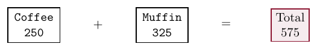
The first version
Order stores the customer and what they picked, with one boolean per item: hasCoffee, hasTea and hasMuffin. A false flag means that the product was not ordered. The constructor sets the customer, and every item starts as false. All the fields are public, so any class can read or change them. Kiosk reads those fields, computes the total and prints the reports. Its total uses price constants, but its receipt contains separate literal prices. The demo prints a receipt and then a short summary.
public class Order
{
public boolean hasCoffee;
public boolean hasTea;
public boolean hasMuffin;
public String customerName;
public String customerPhone;
public Order(String customerName,
String customerPhone)
{
this.customerName = customerName;
this.customerPhone = customerPhone;
hasCoffee = false;
hasTea = false;
hasMuffin = false;
}
}public class Kiosk
{
private static final int COFFEE_PRICE = 250;
private static final int TEA_PRICE = 200;
private static final int MUFFIN_PRICE = 325;
private Order order;
public Kiosk(Order order)
{
this.order = order;
}
public int getTotal()
{
int total = 0;
if(order.hasCoffee) {
total = total + COFFEE_PRICE;
}
if(order.hasTea) {
total = total + TEA_PRICE;
}
if(order.hasMuffin) {
total = total + MUFFIN_PRICE;
}
return total;
}
public void printReceipt()
{
System.out.println(
"Order for " + order.customerName);
System.out.println(
"Phone " + order.customerPhone);
if(order.hasCoffee) {
System.out.println("Coffee 250");
}
if(order.hasTea) {
System.out.println("Tea 200");
}
if(order.hasMuffin) {
System.out.println("Muffin 325");
}
System.out.println("Total " + getTotal());
}
public void printSummary()
{
System.out.println(
"Order for " + order.customerName);
System.out.println(
"Phone " + order.customerPhone);
System.out.println("Total " + getTotal());
}
}public class OrderDemo
{
public static void main(String[] args)
{
Order order = new Order("Ada Lim", "555-0101");
order.hasCoffee = true;
order.hasMuffin = true;
Kiosk kiosk = new Kiosk(order);
kiosk.printReceipt();
kiosk.printSummary();
}
}Expected output
Order for Ada Lim Phone 555-0101 Coffee 250 Muffin 325 Total 575 Order for Ada Lim Phone 555-0101 Total 575
A sequence diagram
A sequence diagram shows the calls of one run, read from top to bottom. Each object has a dashed lifeline below its box. A solid arrow is a method call or new. A red dashed arrow marks one class reading or setting another class's fields. The demo sets two flags directly, and the kiosk reads the order's fields each time it prints. The small loop is the kiosk calling its own getTotal().
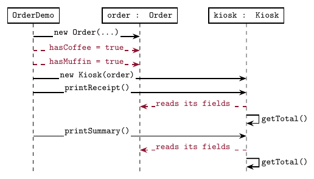
Counting changes
Adding the cookie needs seven new lines in two classes: two in Order and five in Kiosk. The comments number them:
// In Order:
public boolean hasCookie; // 1
hasCookie = false; // 2
// In Kiosk:
private static final int
COOKIE_PRICE = 175; // 3
if(order.hasCookie) { // 4
total = total + COOKIE_PRICE; // 5
}
if(order.hasCookie) { // 6
System.out.println(
"Cookie 175"); // 7
}We count added lines, leaving out brace-only lines and the demo line order.hasCookie = true; that orders the cookie. The same rule applies when we compare the better design later. The price 175 is written twice, in lines 3 and 7, and Java does not check that they match. Every new item needs edits in both classes. A good design writes each fact in one place, so a change touches as few places as possible.
Practice
1.1 Suppose coffee rises from 250 to 275 cents in this first design. Which source lines must change so the receipt and total agree? Count the changed lines and classes.
| Changed lines | Classes |
|---|---|
1.2 Two versions both print the correct standing total. What concrete change would you try to compare how easy their designs are to change?
2. Silent bugs
A missed branch
Suppose the cookie field and receipt branch are added, but the total branch is missed. The program compiles without warnings. Its receipt is legal text, and its arithmetic is legal Java, but the two parts describe different orders.
Order for Ada Lim Phone 555-0101 Coffee 250 Muffin 325 Cookie 175 Total 575
The listed food costs 750 cents, but the program charges 575: the customer gets the cookie for free. The receipt has a cookie branch and getTotal does not. Each method is valid Java on its own, so the compiler sees nothing wrong. Java checks names and types here; it does not add the receipt lines and compare them with the total.
Implicit coupling is a dependency between pieces of code that the compiler cannot check. printReceipt and getTotal must list the same items and prices. If one changes and the other does not, Java cannot tell.
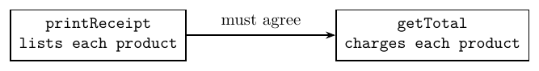
A better design keeps each item's name and price in one place, and the receipt and the total both read from there. The question for the rest of the lecture: how do we organise the program so that adding one item does not need changes all over the place?
Six design problems
The first version works, but it has six design problems. We fix them in this order, and Ada's receipt stays the same after every fix.
- Problem 1, header copied.
printReceiptandprintSummaryboth printOrder for Ada LimandPhone 555-0101. Fix 1: oneprintHeadermethod that both reports call. - Problem 2, public fields.
Kioskreadsorder.hasCoffeeandorder.customerName, andOrderDemosetshasCoffeetotrue. Fix 2: private fields, and methods such asaddCoffee()andhasCoffee(). - Problem 3, total in the wrong class.
getTotalis inKiosk, but the items it checks are inOrder. Fix 3: movegetTotalintoOrder. - Problem 4, two things in one class.
Orderholds the customer (customerName,customerPhone) and the items. Fix 4: aCustomerclass for the name and phone. - Problem 5, one field per item. A cookie needs
hasCookieand two moreifstatements. Fix 5: an enumMenuItemwithCOFFEE,TEAandMUFFIN, kept in a list. - Problem 6, prices written twice.
COFFEE_PRICEholds 250 for the total, and the receipt printsCoffee 250. This caused the cookie bug. Fix 6: each enum value holds its name and price, as inCOFFEE("Coffee", 250).
Class diagrams
A UML class diagram draws each class as a box with three parts: the name, the fields and the methods. A minus sign means private and a plus sign means public. An underlined field is static. A dashed arrow points from a class to a class it uses. Constructors and OrderDemo are left out. The first version shows problems 1 to 6: both print methods copy the header, every field of Order is public, getTotal is in Kiosk, Order holds the customer and the items, there is one boolean per item, and the prices are in Kiosk's constants and again in its receipt text.
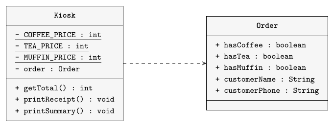
The fixed version shows the six fixes. getHeader is written once, and every field is private. Order computes its own total, Customer has its own class, and the items are in one list. Each MenuItem value holds its name and price; the enum's box lists its values above its fields.
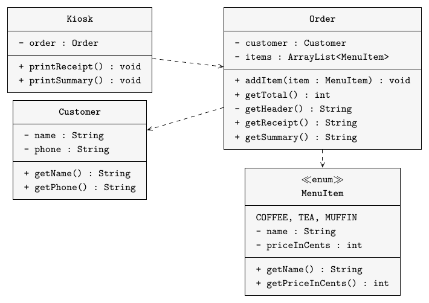
Use this complete delivery class for the questions below. Its two methods contain separate charge values.
public class Parcel
{
public int getCharge()
{
return 300;
}
public String getLabel()
{
return "Delivery 250";
}
}Practice
2.1 This separate delivery example compiles. What two lines does the code print? Explain which prices disagree.
Parcel parcel = new Parcel();
System.out.println(parcel.getCharge());
System.out.println(parcel.getLabel());| Line | Printed |
|---|---|
| 1 | |
| 2 |
2.2 How could the delivery class keep the charge in one place while still returning both a number and a label? Describe the stored value and how the methods use it.
3. Duplication
The copied header
Problem 1: printReceipt and printSummary both start with the same two lines. Duplication is the same code or knowledge written in more than one place. If the header changes, we must edit both copies. Miss one and the two reports disagree, just like the missed cookie total. The literal receipt prices also repeat the knowledge used by the total; Fix 6 deals with them.
Fix 1 uses method decomposition, which splits a larger task into smaller methods with clear jobs. Extract the two header lines into a private method inside Kiosk. Each report calls printHeader() in the place where its old copy appeared:
private void printHeader()
{
System.out.println("Order for " + order.customerName);
System.out.println("Phone " + order.customerPhone);
}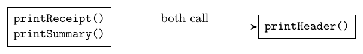
Method cohesion
Cohesion is how well a piece of code matches one task or one entity. A cohesive method does one well-defined task, and a cohesive class represents one well-defined entity (Textbook, Section 8.11). In the first version, printReceipt has two jobs: it prints the header, then it lists the items and the total. After Fix 1, printHeader has one job: print the two header lines. printReceipt also has one job, printing a receipt, and it calls printHeader to do part of it. A method that prints a receipt and also changes the customer's phone number would mix two jobs.
Names help readers see these boundaries. printHeader describes an output operation. getTotal describes a returned value. A name such as doThings gives the reader no information about the job. Short methods with clear names are easier to read and can be called wherever their task is needed.
Practice
3.1 Two report methods end with the same lines below. Extract a private method called printFooter. Show the method and the replacement call used in each report.
System.out.println("Thank you");
System.out.println("Please visit again");The box starts with two small reports. Extract the footer and replace both copies with calls.
3.2 A method named getTotal prints a receipt and returns its total. Suggest a clearer division of work and suitable method names.
3.3 A receipt method calls printHeader(), printItems() and printTotal(). Does using three helpers make its jobs unrelated? Explain using the purpose of the report.
4. Encapsulation
Public fields
Problem 2: the fields of Order are public, so Kiosk reads and sets them directly, as in order.hasCoffee. Kiosk depends on a boolean with that exact name. If Order renames hasCoffee or stores its items another way, Kiosk breaks.
Private access
Encapsulation hides how a class works: other classes should see what a class can do, not how it does it (Textbook, Section 8.6.1). In Java, make the fields private and give other classes public methods. Once a field is private, no other class can read it. This code does not compile:
class Order
{
private boolean hasCoffee;
}
class Kiosk
{
public boolean read(Order order)
{
return order.hasCoffee;
}
}error: hasCoffee has private access in Order
A public query gives a controlled answer instead:
public boolean hasCoffee()
{
return hasCoffee;
}The caller changes order.hasCoffee to order.hasCoffee(). This method is a promise to answer a question. Its implementation may change if the representation changes, provided it keeps the same meaning. Operations such as addCoffee() also let callers request changes without writing fields directly. So Order can change how it stores its items without breaking Kiosk.
Coupling
Coupling is how strongly classes are connected to each other. Aim for loose coupling: each class is mostly independent and talks to others through a small, well-defined interface (Textbook, Section 8.3). In the first version the coupling is tight: Kiosk uses all five fields of Order, so renaming one breaks Kiosk. In the final design, Kiosk only calls getReceipt() and getSummary(), so Order can change its fields freely.
Fix 2 replaces field access with method calls. Kiosk only calls methods, so Order can change its fields as long as the methods still work. A dependency arrow points from the class that uses something to the class it uses.
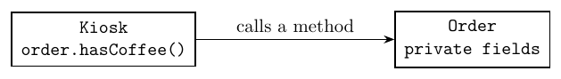
Private fields do not fix everything. Kiosk still knows every item and every price until we move that work. A getter hides a field but still connects its caller to a method, so fewer and narrower connections leave fewer details that a caller must know.
Practice
4.1 Order.customerPhone has become private, and getCustomerPhone() returns its value. Rewrite this old caller.
System.out.println(order.customerPhone);A finished private-field Order is available. Complete the caller.
4.2 A programmer makes every field private but leaves every product price copied in the receipt and total. Which design problem remains, and why?
4.3 An order changes how it stores its choices but keeps hasCoffee() with the same meaning. Must a caller that only uses this query change? Explain the condition that matters.
5. Responsibility
Work near its data
Problem 3: Kiosk computes the total, but Order holds the items, so Kiosk must ask Order about each item. Responsibility-driven design assigns a job to the class that holds the information the job needs. Fix 3 moves the calculation into Order, the class that has the data, and Kiosk asks for the result. Needing an answer does not mean the caller should calculate it.
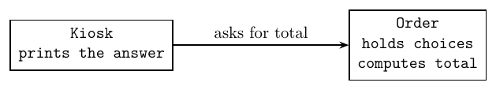
Inside Order, getTotal() can read the order's own private fields:
public int getTotal()
{
int total = 0;
if(hasCoffee) {
total = total + 250;
}
if(hasTea) {
total = total + 200;
}
if(hasMuffin) {
total = total + 325;
}
return total;
}Kiosk just calls order.getTotal(). Each price is still written twice, in the total and in the receipt; Fix 6 deals with that. Moving behaviour to its owner is useful even before that separate problem is removed.
Returned text
Fix 3 also moves the receipt. Order.getReceipt() builds and returns a String, and getSummary() returns the short version. The kiosk's printing method becomes:
public void printReceipt()
{
System.out.println(order.getReceipt());
}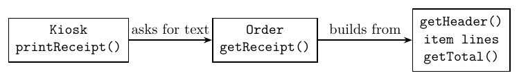
The order builds the header with getHeader(), then the item lines and the total. The kiosk chooses an output destination and prints the text. Another caller could save the returned String, show it on a screen, or compare it with the expected text, without copying its formatting rules. Ada's receipt still ends with Total 575.
A returned String describes the order at the time of the call. A later change to the order does not update a String already stored in a local variable. Call getReceipt() again to obtain a receipt for the changed order.
Practice
5.1 Add boolean hasAnyItem() to the flag-based design. Choose Order or Kiosk, and write the method using hasCoffee, hasTea and hasMuffin.
Add the method to Order. The check tries an empty order and each choice separately, then calls the method again.
5.2 A new ReceiptSaver needs exactly the same receipt text as the kiosk. How should it obtain that text without copying the formatting rules?
5.3 Use the intermediate order with returned receipt text. What does this print?
Order order = new Order("Ada Lim", "555-0101");
String receipt = order.getReceipt();
order.addCoffee();
System.out.println(receipt);
System.out.println(order.getTotal());| Line | Printed |
|---|---|
| 1 | |
| 2 | |
| 3 | |
| 4 |
6. Cohesion
Related data and operations
Problem 4: Order holds two things: who the customer is (name and phone) and what they ordered. A customer can place many orders, so the name and phone belong in their own class.
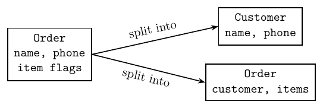
A class has high cohesion when it represents one well-defined entity (Textbook, Section 8.11). A quick test: describe the class in one sentence without "and". "An Order holds a customer and their items" needs "and". Fix 4 extracts Customer with private fields and getters. Order now holds a Customer instead of two Strings.
public class Customer
{
private String name;
private String phone;
public Customer(String name, String phone)
{
this.name = name;
this.phone = phone;
}
public String getName()
{
return name;
}
public String getPhone()
{
return phone;
}
}After the split, each class is one thing. A change to how phone numbers are stored touches only Customer. Do not split too far: a class needs related data and methods, and one field on its own is usually not worth a class. An extra class should clarify an idea or a responsibility.
Practice
6.1 A lesson class stores teacherName, teacherEmail, room and startTime. Suggest two cohesive classes and assign those fields to them.
7. Enums and switches
One field per item
Problem 5: each item has its own boolean field, and its own if in both getTotal and getReceipt. A cookie needs a new field and two new if statements. A boolean also cannot count, so Ada cannot order two coffees. Fix 5 names the items with an enum and keeps the order's items in a list.
Enums
An enumerated type, or enum, lists a fixed set of named values (Textbook, Section 8.14.1). It is written like a class, with enum in place of class:
public enum MenuItem
{
COFFEE, TEA, MUFFIN
}The values are written in capitals, and we use them as MenuItem.COFFEE. We never call new: Java creates one object for each value. A MenuItem variable can only hold one of these values, so a typo such as MenuItem.COFEE does not compile. A String such as "Cofee" would compile and fail later.
A list of menu items
The order stores its choices in an ArrayList<MenuItem>, and the demo adds MenuItem.COFFEE and MenuItem.MUFFIN. One list holds any number of items, even the same item twice.
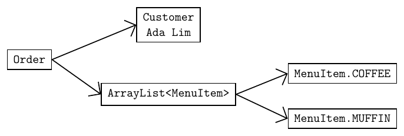
Order(Customer customer, ArrayList<MenuItem> items) copies the input list's references into a new list, so later edits to the caller's list leave the order's list unchanged.
Switch statements
A switch statement selects statements to run from several options (Textbook, Section 8.12.1). Java compares the value with each case and starts at the one that matches. break ends the case; without it, Java carries on into the next case. With an enum, a case names the value, as in case COFFEE:. A switch may end with a default case, which runs when no case matches. With no default, nothing runs.
Every switch can also be written as an if-else chain. These two blocks set the same price for every item:
switch(item) {
case COFFEE:
price = 250;
break;
case TEA:
price = 200;
break;
case MUFFIN:
price = 325;
break;
default:
price = 0;
break;
}if(item == MenuItem.COFFEE) {
price = 250;
}
else if(item == MenuItem.TEA) {
price = 200;
}
else if(item == MenuItem.MUFFIN) {
price = 325;
}
else {
price = 0;
}Each case matches one else if, and default matches the last else. A case names only the value, TEA; the if needs the full name, MenuItem.TEA, and compares it with ==.
Fix 5's getTotal loops over the list and uses a switch to pick the price for each item:
public int getTotal()
{
int total = 0;
for(MenuItem item : items) {
switch(item) {
case COFFEE:
total = total + 250;
break;
case TEA:
total = total + 200;
break;
case MUFFIN:
total = total + 325;
break;
}
}
return total;
}Two coffees are now two items, and both are charged. The receipt still prints Total 575 for Ada.
Prices written twice
Problem 6: getReceipt needs a second switch with the same cases, and it writes each price again:
case COFFEE:
receipt = receipt + "Coffee 250\n";
break;Adding a cookie needs a new enum value and a new case in both switches. Miss one case and we have the cookie bug again: printed but not charged. Java does not complain, because a switch does not have to list every value.
An enum with fields
Fix 6 stores each item's name and price in the enum value itself. An enum can have fields, a constructor and methods, like a class. Each value passes its name and price to the constructor, as in COFFEE("Coffee", 250):
public enum MenuItem
{
COFFEE("Coffee", 250),
TEA("Tea", 200),
MUFFIN("Muffin", 325);
private String name;
private int priceInCents; MenuItem(String name, int priceInCents)
{
this.name = name;
this.priceInCents = priceInCents;
}
public String getName()
{
return name;
}
public int getPriceInCents()
{
return priceInCents;
}
}The constructor is not public; Java calls it once for each value. Each price is now written in exactly one place. The switch is gone: the loop asks each item for its price, so it works for any items, including ones added later.
public int getTotal()
{
int total = 0;
for(MenuItem item : items) {
total = total + item.getPriceInCents();
}
return total;
}getReceipt does the same with item.getName(). Small classes with one job are easier to read and to reuse. One Customer can place many orders, and MenuItem could be used in another program.
Practice
7.1 What two numbers does this print? The order constructor copies the supplied list.
Customer customer = new Customer("Ada Lim", "555-0101");
ArrayList<MenuItem> items = new ArrayList<>();
items.add(MenuItem.COFFEE);
items.add(MenuItem.COFFEE);
Order order = new Order(customer, items);
System.out.println(order.getTotal());
items.add(MenuItem.TEA);
System.out.println(order.getTotal());| Line | Printed |
|---|---|
| 1 | |
| 2 |
7.2 Sketch the references for an order containing two coffees. Use two list entries and the one MenuItem.COFFEE object. Explain why the total counts two items.
Draw the sketch on paper. In the box, describe where each arrow ends and explain the total.
7.3 Write an enum Size with the values SMALL, MEDIUM and LARGE. Why is a Size parameter safer than a String parameter such as "medium"?
7.4 Drink stores a name and a Size. Write getExtra() with a switch on size. A small drink costs 0 cents extra, a medium 50 and a large 100.
public enum Size
{
SMALL, MEDIUM, LARGE
}public class Drink
{
private String name;
private Size size;
public Drink(String name, Size size)
{
this.name = name;
this.size = size;
}
public int getExtra()
{
int extra = 0;
// Set extra with a switch on size.
return extra;
}
}Write the switch in getExtra. A finished Size enum is available. The check tries all three sizes and calls the method again.
7.5 What does this print? Look closely at the TEA case.
MenuItem item = MenuItem.TEA;
int total = 0;
switch(item) {
case COFFEE:
total = total + 250;
break;
case TEA:
total = total + 200;
case MUFFIN:
total = total + 325;
break;
}
System.out.println(total);| Line | Printed |
|---|---|
| 1 |
8. Refactoring
Structure and behaviour
Refactoring changes the structure of code without changing its observable behaviour. Extracting the header, moving methods and splitting classes can all be refactorings when their observable results stay the same. Check the original receipt and summary after each structural change, before adding a feature. Fixes 1 to 6 were all refactoring: the output never changed. Then extend the program and check its new behaviour separately. If both changes are made together, a failure has more possible causes.
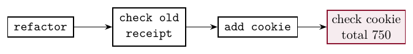
The cookie change
The better design needs one new value in the MenuItem enum. The semicolon moves from MUFFIN to the new last value:
COFFEE("Coffee", 250),
TEA("Tea", 200),
MUFFIN("Muffin", 325),
COOKIE("Cookie", 175);The demo still has to order the cookie with order.addItem(MenuItem.COOKIE). The order's loops already include its price and text. Order, Customer and Kiosk keep the same code as before this addition. Using the same counting rule as before, product support costs one added line in one class, compared with seven added non-brace lines in two classes. With the switches of Section 7, it would also have needed a new case in both switches.
The whole design
These are the final Order, Kiosk and OrderDemo. They use Customer from Section 6 and the MenuItem enum with fields from Section 7, with COOKIE added. The constructor makes a new list and copies each supplied item into it. The public addItem method changes the order's own list. The shared header method keeps the receipt and summary consistent, while the kiosk prints either result. The demo prints Ada's receipt and summary, then adds a cookie and prints the receipt again.
import java.util.ArrayList;
public class Order
{
private Customer customer;
private ArrayList<MenuItem> items;
public Order(Customer customer,
ArrayList<MenuItem> items)
{
this.customer = customer;
this.items = new ArrayList<>();
for(MenuItem item : items) {
this.items.add(item);
}
}
public void addItem(MenuItem item)
{
items.add(item);
}
public int getTotal()
{
int total = 0;
for(MenuItem item : items) {
total = total + item.getPriceInCents();
}
return total;
}
private String getHeader()
{
return "Order for " + customer.getName() + "\n"
+ "Phone " + customer.getPhone() + "\n";
}
public String getReceipt()
{
String receipt = getHeader();
for(MenuItem item : items) {
receipt = receipt + item.getName() + " "
+ item.getPriceInCents() + "\n";
}
return receipt + "Total " + getTotal();
}
public String getSummary()
{
return getHeader() + "Total " + getTotal();
}
}public class Kiosk
{
private Order order;
public Kiosk(Order order)
{
this.order = order;
}
public void printReceipt()
{
System.out.println(order.getReceipt());
}
public void printSummary()
{
System.out.println(order.getSummary());
}
}Expected output
Order for Ada Lim Phone 555-0101 Coffee 250 Muffin 325 Total 575 Order for Ada Lim Phone 555-0101 Total 575 Order for Ada Lim Phone 555-0101 Coffee 250 Muffin 325 Cookie 175 Total 750
import java.util.ArrayList;
public class OrderDemo
{
public static void main(String[] args)
{
Customer customer = new Customer(
"Ada Lim", "555-0101");
ArrayList<MenuItem> items = new ArrayList<>();
items.add(MenuItem.COFFEE);
items.add(MenuItem.MUFFIN);
Order order = new Order(customer, items);
Kiosk kiosk = new Kiosk(order);
kiosk.printReceipt();
kiosk.printSummary();
order.addItem(MenuItem.COOKIE);
kiosk.printReceipt();
}
}Design guidelines
These guidelines are about jobs and responsibilities, not a fixed number of lines.
- A method is too long when it does more than one logical task.
- A class is too complex when it represents more than one entity.
- Count jobs, not lines. A short method can mix two jobs, and a long one can still do just one.
- Pick the structure that fits the data, such as a list for any number of items.
- Use an enum for a fixed set of values. Give it fields when each value has its own data.
- Give other classes methods to call, not fields to read.
Practice
8.1 A proposed edit extracts the receipt header and changes the coffee price at the same time. How would you split this work so a wrong result is easier to investigate?
8.2 A private field is renamed everywhere it is used. No output or public operation changes. Is this refactoring? Would removing the phone line from a receipt be the same kind of change?
8.3 Predict the two totals for this different order using the same menu prices.
Customer customer = new Customer("Ada Lim", "555-0101");
ArrayList<MenuItem> items = new ArrayList<>();
items.add(MenuItem.TEA);
items.add(MenuItem.MUFFIN);
Order order = new Order(customer, items);
System.out.println(order.getTotal());
order.addItem(MenuItem.COOKIE);
System.out.println(order.getTotal());| Line | Printed |
|---|---|
| 1 | |
| 2 |
9. Practice: Loans
The problem
A library loan desk has a starter program that works. Improve its design at home, then compare with the solution. The starter has three of today's problems: public fields (Problem 2), the fine rule written twice (duplication), and lateness worked out by the desk instead of the book (Problem 3). Today is day 12, and a late book costs 25 cents per day. Dune is due on day 10, Emma on day 14 and Holes on day 3.
A library's starter program stores title, dueDay and returned as public fields in Book. Book(String title, int dueDay) creates an unreturned book. LoanDesk holds an ArrayList<Book>; its constructor starts an empty list and addBook(book) appends a book. Both printOverdue(today) and printTotal(today) contain the 25-cent daily fine rule.
Use non-null titles and books, add each book once, and use small day numbers on the same calendar. All days and fine totals fit in an int. A returned book has no current fine in this model; the program does not keep paid-fine history.
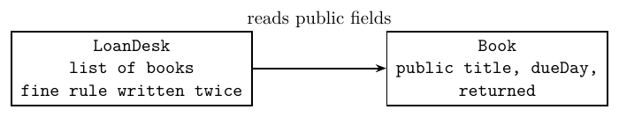
The starter classes
public class Book
{
public String title;
public int dueDay;
public boolean returned;
public Book(String title, int dueDay)
{
this.title = title;
this.dueDay = dueDay;
returned = false;
}
}import java.util.ArrayList;
public class LoanDesk
{
private ArrayList<Book> books;
public LoanDesk()
{
books = new ArrayList<>();
}
public void addBook(Book book)
{
books.add(book);
}
public void printOverdue(int today)
{
for(Book book : books) {
if(!book.returned && today > book.dueDay) {
int days = today - book.dueDay;
int fine = days * 25;
System.out.println(
book.title + ": " + days
+ " days late, fine " + fine);
}
}
}
public void printTotal(int today)
{
int total = 0;
for(Book book : books) {
if(!book.returned && today > book.dueDay) {
total = total + (today - book.dueDay) * 25;
}
}
System.out.println("Total fines: " + total);
}
}public class LoanDemo
{
public static void main(String[] args)
{
LoanDesk desk = new LoanDesk();
desk.addBook(new Book("Dune", 10));
desk.addBook(new Book("Emma", 14));
desk.addBook(new Book("Holes", 3));
desk.printOverdue(12);
desk.printTotal(12);
}
}Part 1: The new interface
Make the book's three fields private. Add the methods in red, and keep the constructors and the desk's existing public methods. The minus sign denotes a private member; the plus sign denotes a public member.
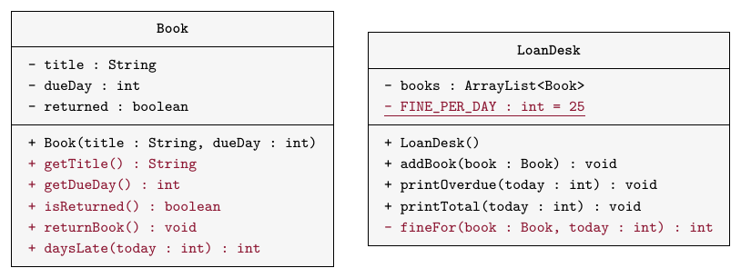
- Each getter returns its field's value.
returnBook()sets the returned flag to true. daysLate(today)returns 0 if the book is returned or today is on or before its due day. A book due today is not late. Otherwise return today minus the due day.fineFor(book, today)uses the book's days late and the one daily-rate constant. Both printing methods use this private helper. Usebook.daysLate(today)to decide which books are overdue.
The demo adds Dune due on day 10, Emma on day 14 and Holes on day 3, in that order. Today is day 12. Call printOverdue(12), then printTotal(12). Only Dune and Holes have report lines.
Part 2: The change
Then extend Part 1. Keep its interface and add the two methods in red. Book owns lateness and the title; LoanDesk owns the fine rate. Keep the remaining fields and methods from Part 1 too.
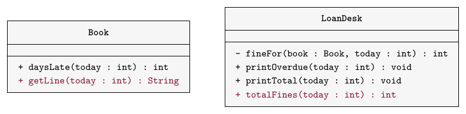
getLine(today)returns the title, a colon and space, the days late anddays late, for exampleDune: 2 days late. It prints nothing and contains no fine rate.totalFines(today)returns the sum offineFor(book, today)for all stored books. An empty desk returns 0.printTotalprints that result.printOverdueuses the book's returned line and adds, finefollowed by the fine fromfineFor. Only books with positive days late have report lines.
Run the demo at 25 cents per day. Change the one rate constant to 30, then compile and run again. Both runs use the same demo. The book's lateness and text methods stay unchanged.
Practice
9.1 Write the revised Book, LoanDesk and LoanDemo. Use additional paper or an IDE for the complete implementation.
Expected output
Dune: 2 days late, fine 50 Holes: 9 days late, fine 225 Total fines: 275
Write each class in its own box. Finished copies of the other classes are available. The checks try a book before its due day, on its due day, after it is due and after it is returned. The desk check also tries an empty desk and repeated calls.
9.2 Predict the three numbers printed by this Part 1 code. Explain the last result.
Book book = new Book("Dune", 10);
System.out.println(book.daysLate(10));
System.out.println(book.daysLate(12));
book.returnBook();
System.out.println(book.daysLate(12));| Line | Printed |
|---|---|
| 1 | |
| 2 | |
| 3 |
9.3 Write the complete Part 2 classes and run both versions of the demo. Use additional paper or an IDE for the complete implementation.
Expected output at 25 cents
Dune: 2 days late, fine 50 Holes: 9 days late, fine 225 Total fines: 275
Expected output at 30 cents
Dune: 2 days late, fine 60 Holes: 9 days late, fine 270 Total fines: 330
The first three boxes use the 25-cent rate. Finished copies of the other classes are available. The checks include a due-today book, a returned book, an empty desk and repeated calls. Change only the rate in the last box to check the 30-cent version.
9.4 For Emma, due on day 14, what does getLine(12) return? Why is that text absent from printOverdue(12)?
| Line | Printed |
|---|---|
| 1 |
10. Review
Design choices
The cafe and loan desk show the same questions in different settings. Look for rules written twice, callers that depend on storage details, and work separated from the information it needs. A method can be short but mix jobs. A class can have private fields yet expose too many details through its methods. An enum names a fixed set of values. A switch picks code by value, but an enum with fields can remove the switch.
A check of one successful example covers only that example. Keep the original behaviour in view while refactoring, including empty collections and boundary cases. Then check the changed feature separately. Refactoring is safe only if we can tell whether we broke something. Lecture 15 starts testing and debugging, where checks become repeatable. Inheritance will later provide another way to remove duplication across classes.
Practice
10.1 A class has private fields and thirty getters that reveal every stored value. A caller uses nearly all of them to calculate a report. Does private access alone show that the design is loosely coupled? Explain a useful improvement.
10.2 A cafe refactor passes the standing-order check. Give two other orders supported by the original design that you would check before adding the cookie.
10.3 A sensor always records exactly seven daily values. Must it use an ArrayList to have a good design? Choose a suitable representation and justify it.
11. Complete Java Programs
Read and run these two complete programs after class, then write the extension asked for at the end of each. Use additional paper or an IDE for the complete implementation. Compare your demo's output with the expected output before changing a class. Both programs use non-null objects and small non-negative amounts that fit in an int.
In each box, complete one class. Finished copies of the other classes are available.
11.1 Program A: Song and Playlist
Each song stores its own title and length. The playlist keeps songs together and asks them for this information when it builds its report and total.
Song(String title, int lengthInSeconds)stores a non-null title and a non-negative length in private fields.getLengthInSeconds()returns the length;getLine()returns its title, length ands.Playlist(String name)stores its name and creates an empty privateArrayList<Song>in thesongsfield.addSong(song)appends a non-null song. Repeated songs are allowed.getTotalSeconds()adds each song's returned length. An empty playlist totals 0.getReport()returns the playlist heading, one song per line and a total line. It prints nothing.- The demo creates Morning and adds Harbour (180 seconds), Rain (210) and Home (150), in that order. It prints the returned report.
/** One song, with its length in whole seconds. */
public class Song
{
private String title;
private int lengthInSeconds;
/** Use a non-null title and a non-negative length. */
public Song(String title, int lengthInSeconds)
{
this.title = title;
this.lengthInSeconds = lengthInSeconds;
}
public int getLengthInSeconds()
{
return lengthInSeconds;
}
/** Return text so the caller can choose where it goes. */
public String getLine()
{
return title + " " + lengthInSeconds + " s";
}
}import java.util.ArrayList;
/** A named collection of songs. */
public class Playlist
{
private String name;
private ArrayList<Song> songs;
public Playlist(String name)
{
this.name = name;
songs = new ArrayList<>();
}
/** Add a non-null song. Repeated songs are allowed. */
public void addSong(Song song)
{
songs.add(song);
}
/** Ask each song for its length. */
public int getTotalSeconds()
{
int total = 0;
for(Song song : songs) {
total = total + song.getLengthInSeconds();
}
return total;
}
public String getReport()
{
String report = "Playlist " + name + "\n";
for(Song song : songs) {
report = report + song.getLine() + "\n";
}
return report + "Total " + getTotalSeconds() + " s";
}
}/** Run the playlist report. */
public class PlaylistDemo
{
public static void main(String[] args)
{
Playlist list = new Playlist("Morning");
list.addSong(new Song("Harbour", 180));
list.addSong(new Song("Rain", 210));
list.addSong(new Song("Home", 150));
System.out.println(list.getReport());
}
}Expected output
Playlist Morning Harbour 180 s Rain 210 s Home 150 s Total 540 s
SongThe checking program reads the stored values from separate objects.
PlaylistThe checking program tries an empty playlist, a song with length 0, a repeated song and a second report.
PlaylistDemoFinished copies of the other two classes are available. Match the expected demo output above.
11.1 Add int countLongerThan(int seconds) to Playlist. Count songs whose length is strictly greater than the argument. For the demo, call it with 180 and print the returned count. Use additional paper or an IDE for the complete implementation.
The extension check tries an empty list, a length equal to the limit, no matches, repeated songs and a second call.
11.2 Program B: Ticket and TicketOffice
A ticket records a customer name and a price code. The office keeps one table of prices for both its total and its report. Amounts are whole cents.
Ticket(String name, int priceCode)stores both values in private fields.getName()andgetPriceCode()return them. Code 0 is adult and code 1 is student. Only those codes are valid here.TicketOffice()creates an empty privateArrayList<Ticket> tickets.addTicket(ticket)appends a non-null ticket with a valid code.- The private
static final int[] PRICESholds 1200 at index 0 and 800 at index 1. PrivatepriceFor(ticket)reads the one table. Both report and total use this helper. getTotal()returns the sum of all ticket prices, or 0 for no tickets.getReport()returns the heading, one line per ticket and the total. The demo prints a report for Ada (code 0), Bo (code 1) and Chen (code 0).
The ticket does not keep a second copy of its price. A price-code index must be valid before priceFor uses it. Use only codes 0 and 1 with this table.
/** A ticket records a name and an index in the price table. */
public class Ticket
{
private String name;
private int priceCode;
/** Use a non-null name; code 0 is adult, code 1 is student. */
public Ticket(String name, int priceCode)
{
this.name = name;
this.priceCode = priceCode;
}
public String getName()
{
return name;
}
public int getPriceCode()
{
return priceCode;
}
}import java.util.ArrayList;
/** One table supplies the prices for both report and total. */
public class TicketOffice
{
private static final int[] PRICES = {1200, 800};
private ArrayList<Ticket> tickets;
public TicketOffice()
{
tickets = new ArrayList<>();
}
/** Add a non-null ticket with a valid price code. */
public void addTicket(Ticket ticket)
{
tickets.add(ticket);
}
private int priceFor(Ticket ticket)
{
return PRICES[ticket.getPriceCode()];
}
public int getTotal()
{
int total = 0;
for(Ticket ticket : tickets) {
total = total + priceFor(ticket);
}
return total;
}
public String getReport()
{
String report = "Tickets\n";
for(Ticket ticket : tickets) {
report = report + ticket.getName() + " "
+ priceFor(ticket) + "\n";
}
return report + "Total " + getTotal();
}
}/** Run the ticket report. All amounts are in cents. */
public class TicketOfficeDemo
{
public static void main(String[] args)
{
TicketOffice office = new TicketOffice();
office.addTicket(new Ticket("Ada", 0));
office.addTicket(new Ticket("Bo", 1));
office.addTicket(new Ticket("Chen", 0));
System.out.println(office.getReport());
}
}Expected output
Tickets Ada 1200 Bo 800 Chen 1200 Total 3200
TicketThe checking program reads the stored values from separate objects.
TicketOfficeThe checking program tries an empty office, both valid price codes, two adult tickets and a second report.
TicketOfficeDemoFinished copies of the other two classes are available. Match the expected demo output above.
11.2 The adult price rises to 1500 cents. Make one source edit, compile and run the same demo again. Explain why both the ticket lines and the total change. Use additional paper or an IDE for the complete implementation.
The extension check uses the same tickets with the new adult price. It also checks an empty office and repeated reports.
Lecture summary
The cafe starts with code that gives the right answer but repeats its product rules. Adding a cookie shows how those copies can get out of step. The first version has six design problems. Each fix keeps Ada's receipt the same, and the final design keeps each item's name and price in one place.
Change
- A correct result for one order tells us little about the cost of the next change. Try a concrete change, then count the lines and classes that need edits.
- Adding cookie support to the first design needs seven added lines in two classes. We leave out brace-only lines and the demo line that orders the cookie.
- The standing order is coffee at 250 cents and a muffin at 325, for a total of 575. Adding a cookie at 175 gives 750. The receipt and total must both include the cookie.
Silent bugs
- Implicit coupling is a dependency between pieces of code that the compiler cannot check. The receipt and total must agree about the menu and its prices.
- The missed-cookie version compiles and prints a cookie line, but still charges 575. Java accepts both the text and the arithmetic. It does not check whether the business rules agree.
- Duplication is the same code or knowledge written in more than one place. Separate price literals duplicate knowledge even when their surrounding code looks different.
- The six problems: 1 the header is copied, 2 the fields are public, 3 the total is in the wrong class, 4
Orderholds two things, 5 there is one field per item, and 6 prices are written twice. Fixes 1 to 6 follow in that order.
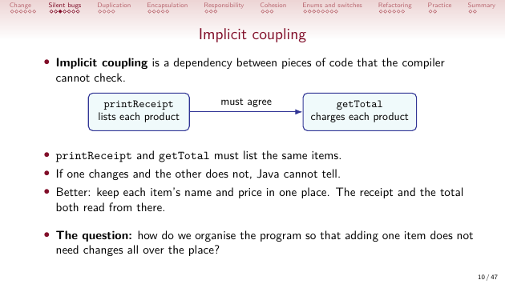
Duplication
- Method decomposition splits a larger task into smaller methods with clear jobs. Extract the shared header into
printHeader(), then call it from both reports. - Cohesion is how well a piece of code matches one task or one entity. A cohesive method does one well-defined task, and a cohesive class represents one well-defined entity (Textbook, Section 8.11). A receipt method can call several helpers and still have one job.
- Names should describe the whole job. A method called
getTotal()returns a number. A separate printing method can ask for that number when it produces output.
Encapsulation and coupling
- Encapsulation hides how a class works: other classes see what it can do, not how it does it (Textbook, Section 8.6.1). Make the fields private and give other classes public methods such as
hasCoffee(). Reading a private field from another class does not compile. - Coupling is how strongly classes are connected to each other (Textbook, Section 8.3). Aim for loose coupling: each class talks to others through a small, well-defined interface. In the first version
Kioskuses all five fields ofOrder. In the final design it calls onlygetReceipt()andgetSummary(). - Private fields alone do not remove duplicated prices or make every interface small. A caller that needs many getters to build a report may still depend on many details.
Responsibility
- Responsibility-driven design assigns a job to the class that holds the information the job needs. The order holds the choices, so it calculates the total. The kiosk asks for that total.
Order.getReceipt()returns text; the kiosk prints it. Another caller can save or compare the same text without copying its formatting rules. Printed output can also be captured by a test.- A returned String describes the order when the method was called. Adding an item later does not update a String already stored in a variable. Call the method again to get current text.
Cohesion
- A class has high cohesion when it represents one well-defined entity. Test it: describe the class in one sentence without "and". "An
Orderholds a customer and their items" needs "and". - Fix 4 extracts
Customerwith the name and phone. A change to how phone numbers are stored now touches onlyCustomer, and several orders can refer to the same customer.
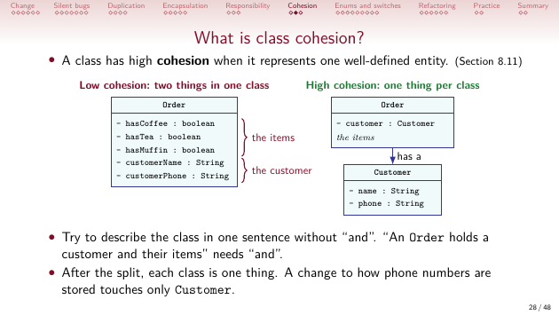
Enums and switches
- An enum lists a fixed set of named values (Textbook, Section 8.14.1), such as
COFFEE,TEAandMUFFINinMenuItem. AMenuItemvariable can hold only one of those values, so a misspelled value does not compile. - Fix 5 keeps the order's items in an
ArrayList<MenuItem>. One list holds any number of items, evenMenuItem.COFFEEtwice. A total loop visits both entries and adds the price twice. - A switch statement selects statements to run from several options (Textbook, Section 8.12.1). Each case ends with
break; without it, Java carries on into the next case. - Two switches, one in
getTotaland one ingetReceipt, write each price twice (Problem 6). Fix 6 gives each enum value its name and price, as inCOFFEE("Coffee", 250). The loops ask each item for its price and name, so no switch is needed. - The order constructor copies the input list's references into a new list. Adding tea to the original list later leaves the order's list unchanged.
Refactoring
- Refactoring changes the structure of code without changing its observable behaviour. Extracting a method, moving work and splitting a class can be refactorings when the results stay the same.
- Fixes 1 to 6 were all refactoring: Ada's receipt never changed. Check the original receipt and summary after each structural change, then add the cookie and check the new behaviour separately.
- The final design adds the cookie with one new value,
COOKIE("Cookie", 175), inMenuItem.OrderandKioskdo not change. The demo callsorder.addItem(MenuItem.COOKIE), and the receipt ends with Cookie 175 and Total 750.
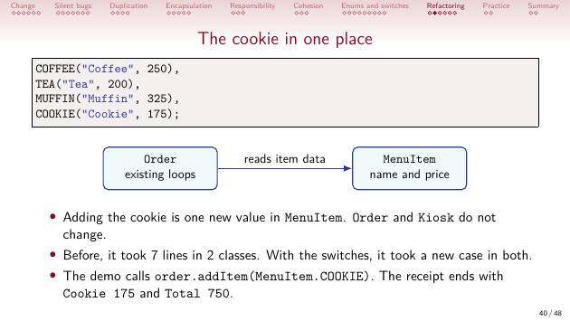
Practice: Loans
Bookowns lateness.daysLate(today)returns 0 for a returned book or a book that is not yet late. A book due today is not late.LoanDeskowns the fine policy. OneFINE_PER_DAYconstant and the privatefineForhelper supply the fine calculation to both reports.- Part 2 adds
Book.getLine(today)andLoanDesk.totalFines(today). Building a line and deciding whether to include it in an overdue report are separate jobs. The desk prints only books with positive days late. - For Dune, Emma and Holes on day 12, the total is 275 cents at 25 cents per day. One constant edit to 30 cents per day changes the total to 330. The book's lateness and text methods stay the same.